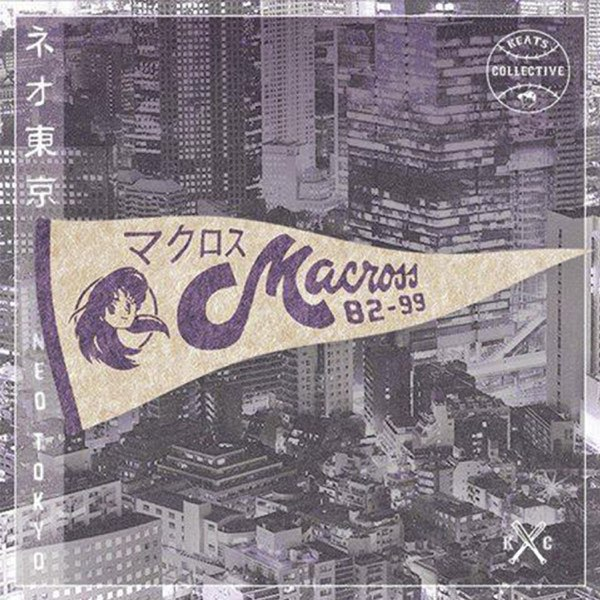

¿Quien es Macross 82-99?
Macross 82-99 conocido por su primer nombre Gerald y su apodo "Mookie", es un productor mexicano que hace música electrónica "pillafónica" inspirada en vaporwave, house francés y cultura japonesa. A este tipo de musica se le conoce como "Future Funk". Su nombre proviene de la serie de anime de Macross.
Albumes
A la fecha de hoy (11/10/2021) Macross 82-99 ha sacado en total 9 albumes con canciones que pondran a bailar a mas de uno!
| Año | Nombre | Imagen |
|---|---|---|
| 2013 | ネオ東京 (Neo Tokyo) |  |
| 2013 | SAILORWAVE | |
| 2014 | A Million Miles Away | |
| 2015 | CHAM! | |
| 2017 | Idols, Sakura | |
| 2018 | SAILORWAVE II | |
| 2020 | Sendagi Collection | |
| 2020 | Shibuya Meltdown | |
| 2022 | SAILORWAVE III |
Canciones
La cancion mas famosa de Macross 82-99 definitivamente puedo decir que es Fun Tonight de su album CHAM! ya que en los festivales de Future Funk aunque el no este invitado no falta el artista que le hace tributo y toca su cancion.
Mi recomendacion de canciones como un fan de Macross 82-99 serian "Plastico Amor", que es una version en español de la famosa cancion de Mariya Takeuchi "Plastic Love", y tambien recomendaria "Two of a Kind" que tiene como artista invitado a Neon Vectors como vocalista: